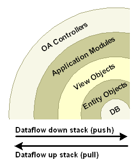

设计属性集
注意： 这节是为Oracle EBS开发者内部使用的。
在OA Framework的MVC框架中，OA Framework划出了客户端和服务端类的清析界限，典型的JSP应用有3个物理层
浏览器
web应用服务（中间层包含UI web bean结构和应用业务逻辑）
数据库服务器
在中间层OA Framework对“客户端”和“服务端”类划出了界限：
客户端类（视图类和控制器代码）驱动HTML用户界面。
服务端类（模型代码）支持任何客户端（不只是OA Framework）用户界面。
这个区别是非常重要的，它保证了从不同客户端访问服务代码的能力。
OA Framework“洋葱形”的代码层次边界：

通常可以在这些边界征用，对象引用下层的数据流，而不会引用上层的。
模型代码不应该直接引用控制器代码。
不要在客户端引用或导入任何服务端的实现类或接口（位于oracle.apps.fnd.framework.server包中的类和接口）
如果需要服务端代码执行一些操作，应该一直通过使用根应用模块接口（oracle.apps.fnd …
创建页面的基本步骤是创建pages，region，items。
创建一个pageLayout区域时，应该特别注意下面的属性：
AutoFooter将这个设置为true以保证在页面上有应用的保密和版权说明链接。
Help Target如果你需要为当前页显示帮助按钮，必须在这里指定帮助文件（通常是文件名）。
AM Definition用于设置页面的根应用模块。必须使用类的全名，比如：oracle.apps.fnd.framework.toolbox.tutorial.server.SearchAM
Function Name总是设置页面的保密函数
Window Title浏览器窗口标题
Title显示在page header中的文本。
Form在pageLayout中设置为true，这通常是默认设置，不要在其子对象中添加亲折form。OA Framework在同一个页面中只支持一个form。
pageLayout Components注意OA Framework页面基础 一文中提到的，页面包含了特殊的被命名的组件，其中一个就是标识图案。为了在页面关联标识图案，选择pageLayout区域或pageLayoutComponents节点，然后右键菜单中选择创建image item，并把它的Image URI属性设置为
服务的概念已经出现了很长时间，但面向服务的概念相对是比较新的。面向服务的架构是一种有助于降低应用耦合的一种构建应用的风格，独立管理的组件可以被重用和重新安排到其它完整功能的应用中。SOA提供下面的功能：
构建和注册服务的能力
使用户发现和调用服务的能力
执行服务的平台
下面的图演示了SOA的基本概念：
SOA的基本概念

使用面向服务的架构你可以：
容易的将Oracle Applications和其它的应用集成
影响已经部署的应用保护现有投资
容易适应更多的需求
服务在EBS的开发、测试、分类、公共安全和私有接口架构中是一个关键组件。开发者使用统一的指导方针和实现方式来创建服务，然后当它们控制源代码时被自动发布到集中的接口仓库。
服务时自描述的，独立的组件可以被部署为web service、EJB session beans或作为共设的Java API（与客户端被部署在同一个JVM中）。服务接口根据用途分为多种不同的类型。Oracle支持业务对象服务。
业务对象是自包含的代表了真实世界的业务领域对象：一个文档、一个地方、一个人或一件事。从实现的角度来说，业务对象包含一个或多个视力对象（VO）映射到下层的复合实体（EO）（子实体不能没有父对象）。比如，在OA Framework Toolbox Tutorial中采购单业务对象包含了一个头部信息并带有一行或多行明细，每个包含一个或多个供货。供货不能离开明细行独立存在 …
1.常见的按键组合： a.最常见的命令都被绑定到了"C-n"(n可以是任意符号)
b.次常见的命令被绑定到了"ESC n"形式
c.其它常见的命令被绑定到了"C-x something"
d.某些特殊命令被绑定到了“C-c something"的形式。这些命令通常都与某些特殊的编辑模式有关
e.有些命令没有被绑定到按钮上。而是通过"ESC x long-command-nam RETURN”命令方式执行
2.如果用F10无法打开菜单,可以用"ESC `"
3."C-x C-v"读错文件时修正
4."C-x i"插件文件
5.使用"C-s"保存时遇到麻烦时,试试使用"C-x C-w …
一个20行的wxPython程序：
#!/bin/env python
import wx
class MyFrame(wx.Frame):
def __init__(self):
wx.Frame.__init__(self,None,-1,"My Frame",size=(300,300))
panel = wx.Panel(self,-1)
panel.Bind(wx.EVT_MOTION,self.OnMove)
wx.StaticText(panel,-1,"Pos",pos=(10,12))
self.posCtrl …本文档描述了与标准后退行为相关的公用应用设计模式，并包含了各个步骤的实现细节。
Supporting the Browser Back Button - Target Goals
通常，你的产品在用户使用后退按钮时应该遵循下面的规则。参见下面的特殊事务流以了解实现和行为的细节。
本文档提供了一组目标并描述了编码标准，你必须遵守以确保对浏览器后退按钮的支持。
可用性测试显示用户非常依赖于浏览器后退按钮。不幸的是，这个导航偏好在事务型的应用中将导致一系列潜在的故障点。例如，思考在OA Framework应用中在下面的场景中使用浏览器后退按钮将导致不可预料的问题。
| 用户导航 | 问题 |
|---|---|
| 用户从表格中删除了一行数据页面被重绘并显示了提示信息标明数据行已经被删除（数据行不再显示在表格中）。然后用户按下浏览器后退按钮，页面将显示出数据行仍然在表格中时的页面。这时用户再次尝试删除数据行。 | 浏览器缓存了页面内容。如果用户执行的一个动作修改了数据状态，然后使用浏览器后退按钮，浏览的页面缓存没有反映出中间层的状态（在这里，是一个不存在的数据行）。当用户试图对缓存页面中被删除的行进行删除或其它处理时，将导致运行时错误。而支持浏览器后退按钮的页面将检测到这个错误并显示出用户友好的提示信息标明数据行已经被删除了。 |
| 在构物车结算处理时，用户选择了“提交定单”按钮购买端口。但不知什么原因，用户使用浏览器后退按钮从确认页面退回了定单提交页面并再次点击了“提交定单”按钮（可能她想修改定单数量）。 | 这个场景与前面描述的第一个场景类似，但未加保护的动作将导致“成功”执行两次交易。（定单可能会被创建两次，而这并不是用户期望的）。支持浏览器后退按钮的页面将可以检查到两次相同的提交并显示出用户友好的提示信息标明定单已经存在了。 |
| 用户从Page1导航到Page2，然后使用退出按钮返回Page1。然后在Page1中点击了一个表单提交组件，这将导致一个未处理的异常（NullPointerException, IndexOutOfBoundsException）。 | OA … |
Ext.onReady()是Ext.EventManager.onDocumentReady()的速写方法。
Ext.Viewport是一个特殊的容器它代表应用的可视区域（浏览器的Viewport）。
Viewport自动将自己渲染到document.body，因此不需要要调用render方法。它在浏览器的viewport调整大小时自动调整自己的大小并管理窗口（Ext的窗口）的大小改变。
Ext.Component是所有Ext组件的基类。所有Component的子类能被乍动 xtype用于标识所需要生成的组件的类型。 下面两个写法效果是一样的：
var viewport = new Ext.Viewport({
layout:'border',
items:[
new Ext.BoxComponent({
xtype:'box',
region:'north',
el: 'north',
height:32
}),
new Ext.BoxComponent …(defun zj-open-directory-with-explorer ()
"在windows中用explorer浏览当前目录"
(interactive)
(shell-command "explorer.exe .")
(browse-url "www.google.cn")
)
(defun zj-display-directory-files ()
"执行shell命令并处理它的输出。这里为显示当前目录下的文件"
(interactive)
(message (shell-command-to-string "ls -l"))
)
(defun zj-display-current-major-mode ()
"如果当前为emacs-lisp-mode则显示当前主模式"
(interactive)
(if (eq 'emacs-lisp-mode major-mode)
(message "emacs-lisp-mode"))
)
(defun zj-regexp-match ()
"正则表达式匹配"
(interactive)
(let ((test-string "aaaaaaaaaaaa123sfdsfs456")
(regexp-string "\\([0-9]+\\)[a-z]+\\([0-9]+\\)"))
(string-match regexp-string test-string)
(message (concat (match-string 1 test-string …